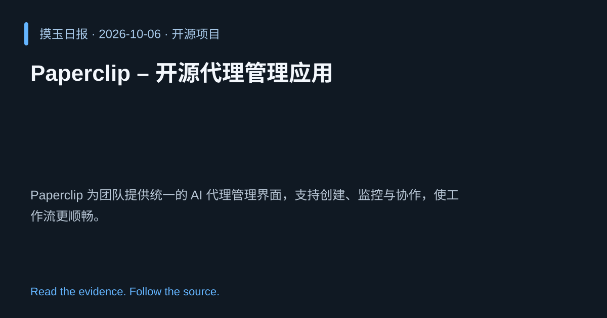

2026-10-06 · Asia/Shanghai · 开源项目 · #18
Paperclip – 开源代理管理应用
paperclipai/paperclip
Paperclip 为团队提供统一的 AI 代理管理界面，支持创建、监控与协作，使工作流更顺畅。
为什么值得关注
填补企业内部 AI 代理治理工具空白，提升协同效率。

热度 20.0 / 100；排名与评分保留该期记录。
2026-10-06 · Asia/Shanghai · 开源项目 · #18
paperclipai/paperclip
Paperclip 为团队提供统一的 AI 代理管理界面，支持创建、监控与协作，使工作流更顺畅。
填补企业内部 AI 代理治理工具空白，提升协同效率。

热度 20.0 / 100；排名与评分保留该期记录。